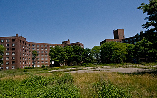

After the Japanese attack on Pearl Harbor on Dec. 7, 1941, the island went into its last great state of activity. Almost overnight, new barracks, warehouses and extra hospital wards went up. The Army moved induction facilities to the island, and built a mess hall and processing facilities to accommodate thousands of soldiers a week. The island was so busy that it needed three ferryboats operating every 15 minutes to handle the personnel going back and forth to Manhattan.
During the war, hundreds of prisoners from the Axis countries were housed in a stockade on the west side of the shoreline, where Brick Village is today. Most of the men were from the Italian army, and were put to work on the island.
The storied First Army departed for Europe from Governors Island on October 12, 1943, and participated in some of the bloodiest battles of the war. When the unit came back home in 1946, the First made note of its symbolic tradition of its numerical designation: it had been the first on the beaches of Normandy, first to enter Paris, first to break the Siegfried Line, first to cross the Rhine and the first to meet the Soviet Red Army. It also was the first command to have a four-star general on Governors Island, General Courtney H. Hodges (1887-1966), only the second U.S. soldier to rise to full general from private.

These 1961 apartments will meet the wrecking ball.
In the 1950s the island sprang to readiness again when the United States sent troops to fight in Korea. The island was once again used as a muster point to send soldiers overseas. In 1961 the Army built its last housing on the landfill, three 7-story apartment buildings for enlisted men and their dependents.
The Army's days on the island were numbered. In November 1964, Defense Secretary Robert McNamara announced that 95 military bases in 33 states would be closed within two years, in order to save $477 million dollars annually. Fort Jay was included with closing the Brooklyn Navy Yard and Brooklyn Army Terminal; McNamara said Fort Jay was on "200 acres of the most valuable real estate in the New York City area," but offered no plans for the island's future. More than 1,200 civilian workers would lose their jobs.
On June 30, 1966, the Army handed the keys to Governors Island to the U.S. Coast Guard.